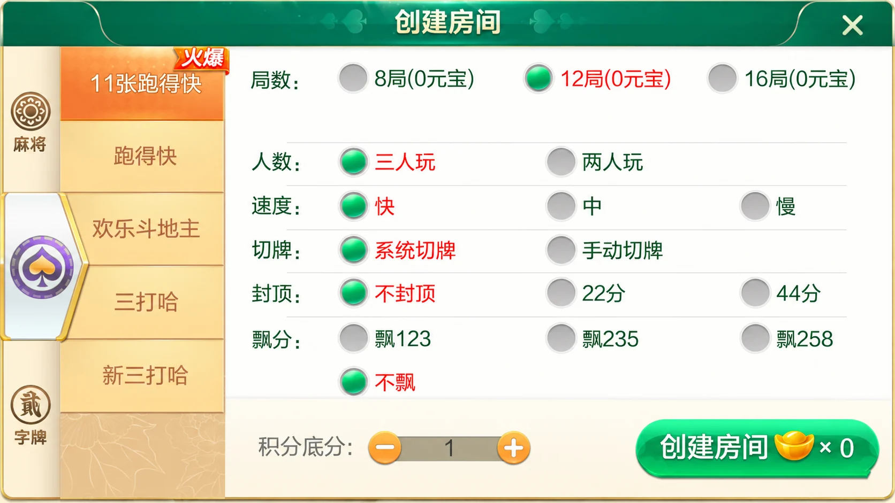
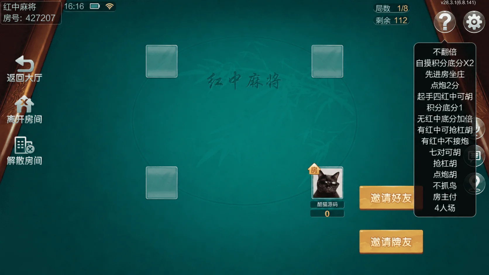

七星系列 · 地区界面与技术笔记
七星长沙：房间规则摘要与配置回显
连接创建选项与房内说明，用同一份配置生成有顺序的规则摘要。
长沙版本的内容组织
长沙版本以麻将、扑克和地方字牌组成大厅。麻将清单包含急速8张麻将、二人缺门麻将、红中麻将、转转麻将和长沙麻将；扑克包含11张跑得快、跑得快、欢乐斗地主与新三打哈；另有宁乡跑胡子等字牌入口。不同版本的清单与菜单可能存在差异，具体玩法以对应配置为单位保存。
创建房间负责选择规则，进入房间后的说明面板负责回显已经生效的配置。两处应共享同一份规则描述，避免创建时选的是一套参数，房内却显示默认文字。
创建选项与房内说明
扑克面板包含人数、速度、切牌与其他选项；红中麻将房间则在右侧显示规则摘要。摘要适合使用固定顺序的短句，保留具体选项，不能把不同玩法套用成同一段通用说明。




配图经过AI整理：第一张为规则面板局部，第二张替换已有个人头像与昵称；不是未经修改的原始截图。房号427207保留，没有新增用户ID。原有积分、元宝及规则文字保留，不据此宣称纯房卡或无兑换机制。
从房间快照生成规则摘要
创建成功后，界面应以服务端确认的房间配置回显摘要，而不是继续读取尚未提交的本地草稿。字段顺序由描述表控制；缺失字段可以跳过，未知选项则应报告错误，避免静默显示成另一个默认选项。
下面是独立教学示例，不是七星原工程代码。它只把配置映射为文本，不计算积分、不控制对局。字段与选项映射是示例数据，应由对应玩法自己的版本描述维护。
export function describeRules(snapshot, fields) {
return fields.flatMap(({ key, label, choices }) => {
if (!Object.hasOwn(snapshot, key)) return [];
const value = snapshot[key];
if (!['string', 'number', 'boolean'].includes(typeof value))
throw new TypeError('Invalid rule value');
const text = choices[String(value)];
if (!Object.hasOwn(choices, String(value)) || typeof text !== 'string')
throw new TypeError('Unknown rule option');
return [`${label}：${text}`];
});
}
独立摘要示例通过10项断言，覆盖稳定顺序、缺失字段、false值、额外字段及无效选项。展示时应使用文本节点，不直接把返回内容拼接为HTML。
字段缺失与字段值为false需要区分。前者代表没有提供配置，后者可以是明确关闭某个选项。房间恢复或重连后重新取得快照，再生成同一顺序的摘要，能够减少旧状态残留。以上是独立实现方法，不涉及第三方工程的部署与授权。